NCP 서버 구축
- Server를 생성한다. (ubuntu 서버를 생성하자)
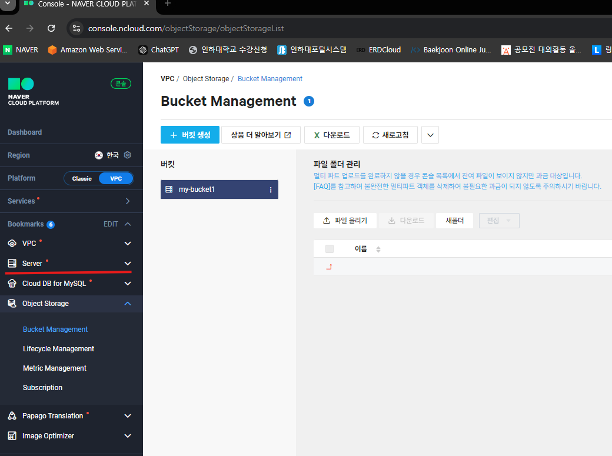
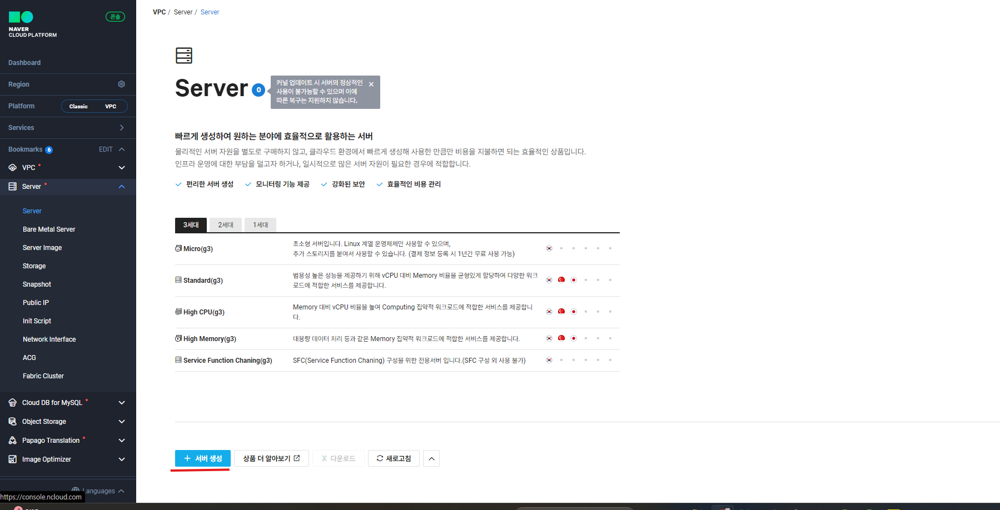
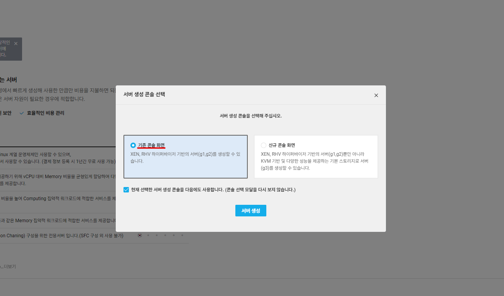
- 서버 설정
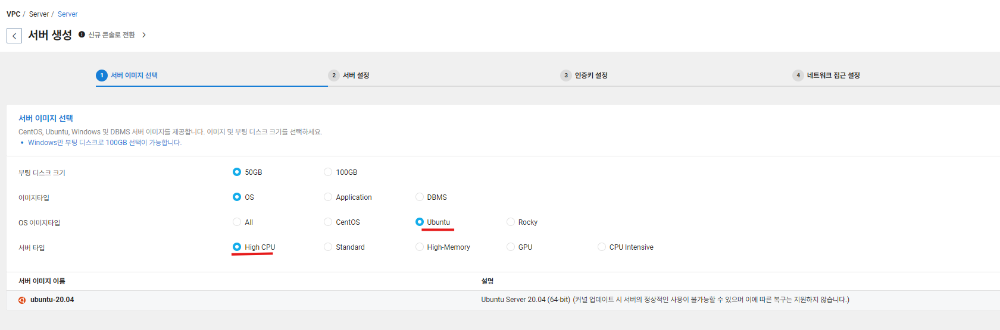
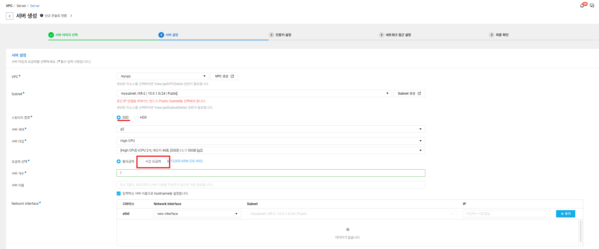
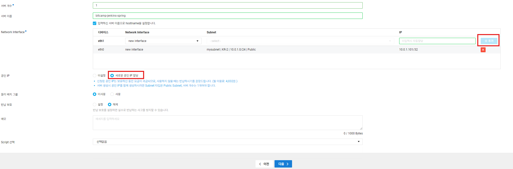
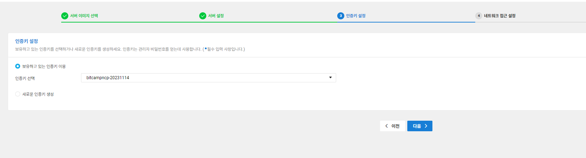
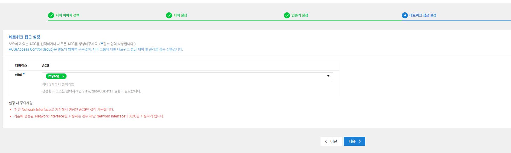
- 서버 생성 완료
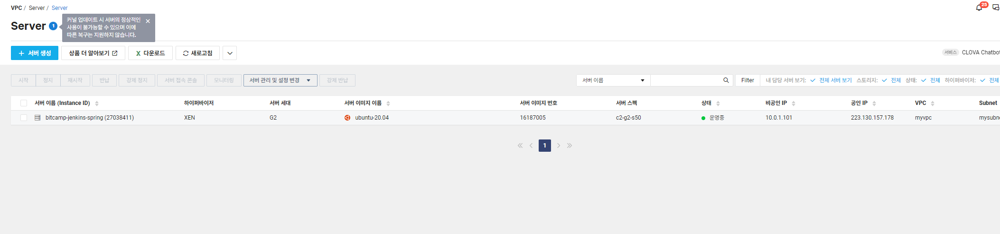
서버 SSH 접속
- 서버 관리자 비밀번호 확인
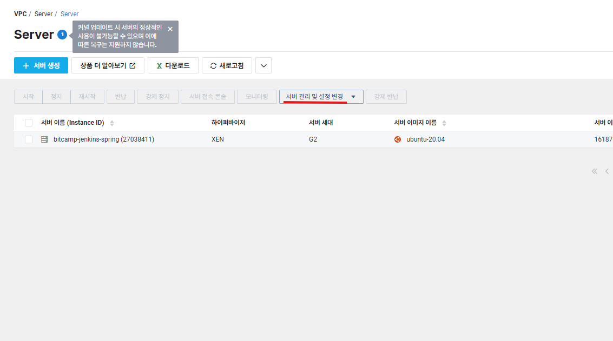
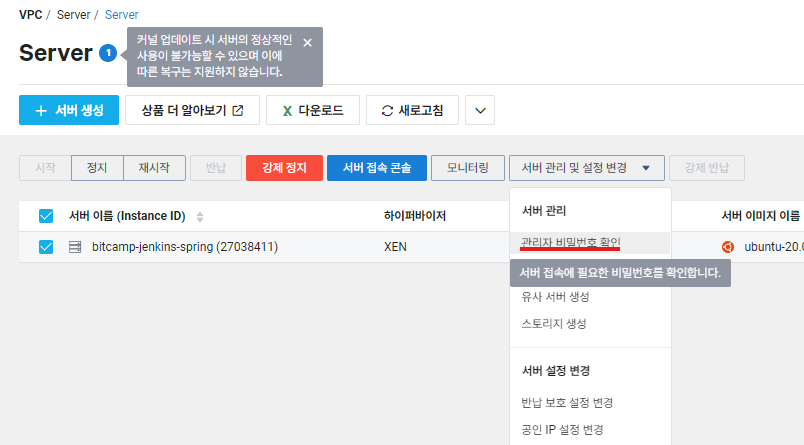
- 키페어 삽입
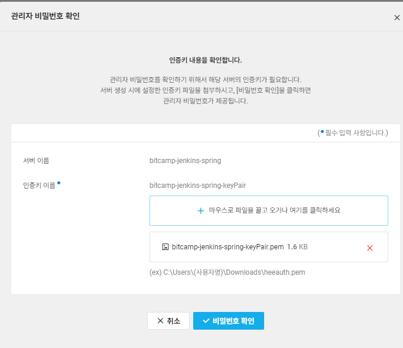
- powershell에서 SSH 접속 진행
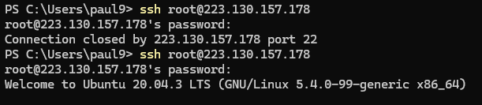
- powershell에서 SSH 접속 완료
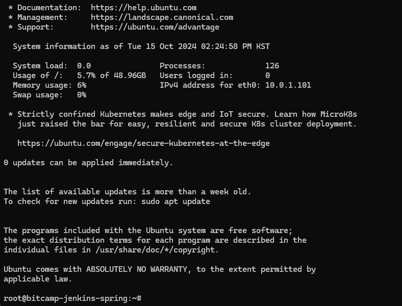
SSH 접속을 왜하는가?
- SSH(Secure Shell) 접속에서 키 페어(Key Pair)를 사용하는 것은 서버와 클라이언트 간의 인증을 안전하게 하기 위한 방법이다.
- 키 페어는 비공개 키(Private Key)와 공개 키(Public Key)로 구성된다.
- SSH 접속 과정에서의 키 페어 사용 절차는 다음과 같습니다
- 사용자가 SSH 클라이언트에서 서버로 접속 요청을 보냅니다.
- 서버는 클라이언트에게 공개 키를 사용하여 암호화한 메시지를 보냅니다.
- 클라이언트는 자신의 비공개 키로 이 메시지를 복호화합니다.
- 클라이언트가 메시지를 성공적으로 복호화하면 서버는 클라이언트가 올바른 사용자인지 확인하고 접속을 허용합니다